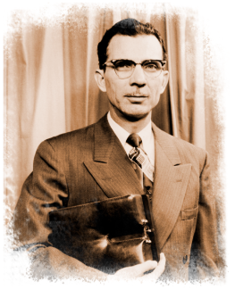
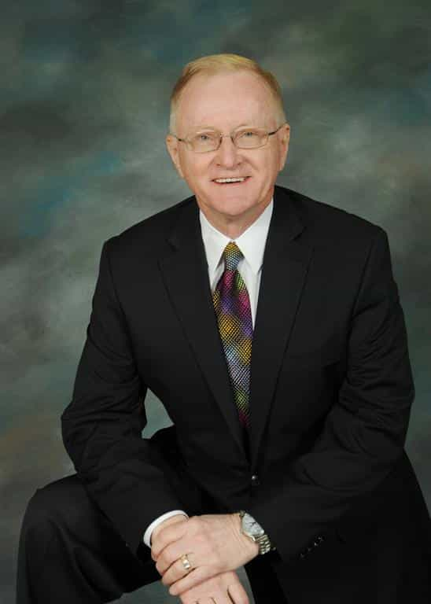
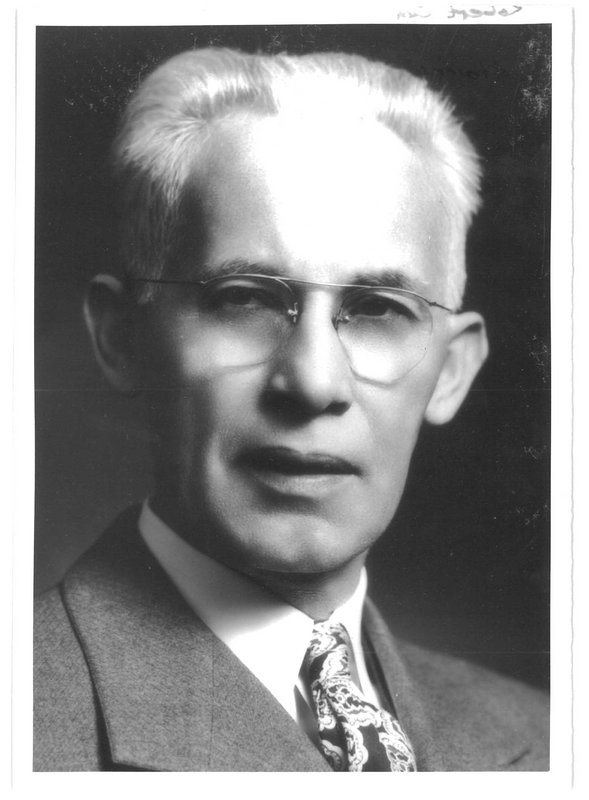
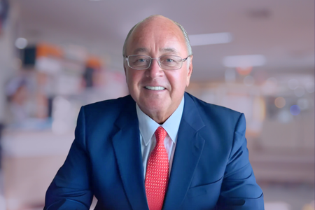
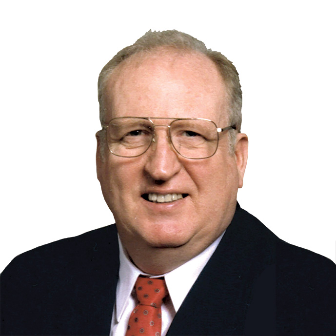
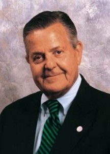

카이로프랙틱이란
근거 기반 의학 관점에서의 현대적 정의.
정의 (근거 기반)
Chiropractic은 관절과 근육을 수기·기구로 자극하여 신경계를 조절하고, 기계적 근골격 기능장애를 회복시키는 의료 행위 범주다. 대표 수기: HVLA Manipulation · Mobilization · Instrument-assisted Adjustment · Flexion-Distraction · Soft Tissue Technique 등.
적용 대상은 기계적 통증·기능장애(요통·경추통·두통·사지 관절 장애 등)에 한정된다. 전신 질환·내장 질환의 직접 치료는 현대 의학에서 지지되지 않는다.
본 강의가 다루는 범위
- 🟢 기계적 근골격 통증에서의 HVLA 및 관련 기법
- 🟢 Functional Neurology 기반 평가 · 치료 · 재평가
- 🟢 Cochrane·PMC 등 peer-reviewed 근거가 있는 임상 적용
- 🔴 Vitalism · Innate Intelligence · 전신 질환 치료 주장 — 비판적 언급만
- 🔴 Cranial rhythm · Visceral manipulation — 제외
간략 역사
사실 중심 요약 — 초기 철학의 신화화된 부분은 역사적 맥락에서만.
1895년 9월 18일 — 카이로프랙틱의 탄생
[TODO: D.D. Palmer의 첫 교정(Harvey Lillard 사례)을 역사적 사실로만 기술. 청각 회복 서사는 "해부학적 경로가 없으며 역사적 신화로 분류"로 명시.]
세속화의 전환점 — Otto Reinert와 Joseph Janse
[TODO: National College(1906 설립)에서 1950-80년대에 vitalism을 벗어나 관절 기능장애·생체역학 기반으로 Diversified를 재구성한 과정. 현대 Diversified의 정체성.]
역사와 과학의 구분
본 강의는 카이로프랙틱의 기법적 전통을 존중하면서도 근거가 확립된 부분과 그렇지 않은 부분을 명확히 구분합니다. 초기 주장 중 많은 부분(전신 질환 치료 등)은 현대 의학 기준을 충족하지 못합니다.
주요 창시자와 학파
12인의 창시자 · 2 교육기관 · 접촉수 12개 — 사진·생몰연도·기여 개요.











본 강의의 편집 원칙
근거 기반 의학(EBM) 기준으로 엄격히 선별된 내용만 포함.
🟢 포함 (Include)
생체역학·신경생리학 기반 설명 · Peer-reviewed 근거(Cochrane·PMC·JMPT) · WHO/NIH/ACA 공식 가이드라인 · 근거 수준 🟢 Strong 🟡 Moderate 🟠 Limited 🔴 No evidence 일관 표기 · 안전성 통계·금기증 · 한국 임상 맥락(정형외과·재활의학·도수치료 협진).
🔴 제외 (Exclude)
Vitalism · "Innate Intelligence" 등 생기론 · 전통 Subluxation 모델의 전신 질환 인과론 · 교정으로 고혈압·천식·소화기·내분비·아동 발달 치료 주장 (근거 없음) · Cranial bones rhythmic motion 진단 · Visceral manipulation의 장기별 치료 주장 · AK 근력검사로 알레르기·영양 진단 · 측정 불가능한 추상 에너지 개념.
12개 챕터 학습 로드맵
각 챕터는 강의록(HTML·MD) · PPTX · 동영상 · 팟캐스트로 구성됩니다.
| Ch | 제목 | 핵심 주제 | 위상 |
|---|---|---|---|
| 1 | 서설 (현재) | 역사 · 철학 · 편집 원칙 · 로드맵 | Orientation |
| ⭐ 2 | Chiropractic Functional Neurology | Assessment · Afferentation · Deafferentation · Efferentation | 근간 프레임워크 |
| 3 | Diversified HVLA | 미국 DC 95.9% 사용 · 기본 HVLA 수기 | 기법 |
| 4 | Gonstead | 5요소 분석 · X-ray listing · 특이적 교정 | 기법 |
| 5 | Toggle Recoil (HIO) | 상부경추 특이 교정 · 비판적 재평가 | 기법 |
| 6 | Thompson | 드롭 테이블 · Derifield leg check | 기법 |
| 7 | Activator Methods | 기구 저강도 · NIH grant 수혜 기법 | 기법 |
| 8 | Cox Flexion-Distraction | 척추 감압 · 디스크 · 신경근증 | 기법 |
| 9 | Logan Basic | 천골 저강도 · 임산부 · 소아 | 기법 |
| 10 | SOT | 카테고리 I/II/III · 골반 블록 | 기법 |
| 11 | Harrison CBP | 수학적 척추 모델 · 자세 재활 | 기법 |
| 12 | Applied Kinesiology | MMT · 근거 비판적 검토 · 한국 임상 | 기법 |
왜 Chapter 2가 Functional Neurology인가
모든 카이로프랙틱 기법(Chapter 3-12)의 공통 작용 원리는 관절·근육 자극 → 구심성 입력(Afferentation) → 중추 처리 → 원심성 출력(Efferentation) 조절입니다. 이 프레임을 먼저 확립한 뒤에 각 기법이 "어떤 입력을 만들고 어떤 출력을 조절하는지" 분석하는 것이 학습의 가장 효율적인 경로입니다. 또한 Assessment는 치료 전·후 모두에 필요한 임상의 근간입니다.
다음 챕터로
서설을 마쳤다면 본 강의의 근간 프레임워크로 이동합니다.
2⭐ Chapter 2. Chiropractic Functional Neurology
진단·치료·평가의 근간 프레임워크. Assessment를 중심으로 Afferentation · Deafferentation · Efferentation의 임상적 의미를 정립합니다.
강의 자료
🎧 마스터 팟캐스트 — 12 챕터 통합 개요
📌 먼저 이것부터 들으세요
"만성 통증은 뇌 소프트웨어의 계산 오류다" — 본 강의 전체의 큰 그림. 통증을 뇌 회로의 계산 오류로 보는 통합 프레임워크 안에서 12개 카이로프랙틱 테크닉이 어떻게 결합되는지 설명합니다. 본격 학습 전 마스터 팟캐스트를 한 번 듣고 시작하세요.
🎧 챕터별 간략 버전 (Brief) — 각 ~5-7분
각 챕터의 핵심을 5-7분으로 압축한 NotebookLM Audio Overview 미리보기. 챕터 페이지에는 60분+ 깊이 있는 긴 버전이 별도로 있습니다.
뇌를 재부팅해 만성 통증과 어지럼증을 고치다 🎧Ch 3 · Diversified HVLA ✅
96%의 카이로프랙터가 선택한 척추 교정술 🎧Ch 4 · Gonstead ✅
척추 원인 콕 짚는 곤스테드 교정법 🎧Ch 5 · Toggle Recoil (HIO) ✅
1번 목뼈를 바로잡는 토글 리코일 🎧Ch 6 · Thompson ✅
다리 길이로 분석하는 톰슨 드롭 교정 🎧Ch 7 · Activator Methods ✅
뼈를 꺾지 않는 초고속 액티베이터 교정 🎧Ch 8 · Cox Flexion-Distraction ✅
수술 없이 디스크 압박을 푸는 콕스 기법 🎧Ch 9 · Logan Basic ✅
부드러운 천골 교정으로 척추를 바로잡다 🎧Ch 10 · SOT ✅
천골과 후두골로 전신을 리부트하는 SOT 🎧Ch 11 · Harrison CBP ✅
수학으로 척추를 재건하는 정밀 공학 CBP
※ Ch 12 Applied Kinesiology는 별도 간략판 미생성 — 챕터 페이지의 긴 버전 참조.
📖 강의록
🎥 영상 / 🎴 슬라이드 / 📄 Report
⏳ 생성 대기
본 챕터(서설)의 영상·슬라이드·리포트는 NotebookLM quota 리셋 후 추가 예정입니다. 위의 마스터 팟캐스트·챕터별 간략 버전·강의록이 핵심 자료입니다.